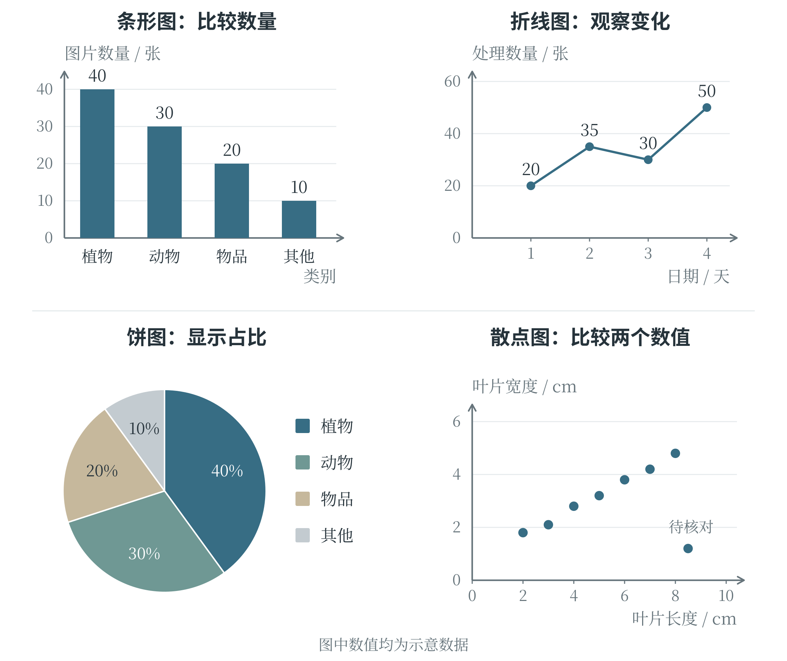
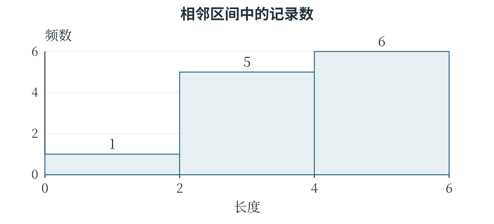

3.2 数据统计与图表阅读
总量、占比与平均数
一批原始记录往往很长，统计可以用少量数值说明其中某个方面的特征。由数据计算得到、用于描述数据的量，称为统计量。假设从五株植物上各取一片叶子，测得长度依次为 2、3、3、4、8 厘米。这组数据包含 5 条记录，长度总和为 20 厘米；最大值为 8，最小值为 2。“有多少片叶子”与“叶片长度合计多少”分别在数记录、加长度，虽然都涉及“总数”，回答的却是不同的问题。
占比表示某一部分在整体中所占的比例，计算时用部分的数量除以整体的数量。五株植物中，有两株的叶片长度不少于 4 厘米，占比是 \(2/5=0.4=40\%\)。百分号表示“每一百份中的份数”，所以 40% 与小数 0.4 表示同一个比例。若一次图片识别中有 20 张图片，其中 17 张判断正确，这批图片上的正确率就是 \(17/20=85\%\)；换了一批图片，分母和统计范围也要随之改变。
把总和平均分给每条记录，得到算术平均数，通常简称平均数，也称均值。上面的长度总和为 20 厘米，分给 5 条记录，平均数就是 4 厘米。它不要求某一条记录恰好等于这个值。例如 2 厘米和 3 厘米的平均数为 2.5 厘米，虽然原记录里没有 2.5。
平均数会随着每一个测量值变化。如果最后的 8 改成 18，总和增加了 10，五个数的平均数便从 4 增加到 6。其余四个数都没动，平均数却明显变大。这种变化不是计算出了错，而是平均数把每条记录都纳入了总和。要说明一组数据的通常水平，有时还需要观察排序后处在中间的位置。
中位数和众数各说明什么
把数据从小到大排列，处于正中间位置的数称为中位数。2、3、3、4、8 已经排好序，中间的第三个数是 3，所以中位数为 3。若记录条数是偶数，没有唯一的中间位置，就取中间两个数的平均数。例如 2、3、4、8 的中位数为 \((3+4)/2=3.5\)。先排序再找中间位置很关键，原来录入顺序中的“第三条”不一定是中位数。众数是出现次数最多的数。五株植物的长度中，3 出现两次，其他数各出现一次，因此众数为 3。一组数据可能有多个众数，例如 2、2、5、5、8 中，2 和 5 都出现两次。对于每个数都只出现一次的数据，通常说没有众数。众数也能用于类别数据：统计图片中出现最多的类别，不需要把类别名称变成可以相加的数字。
平均数、中位数与众数回答的问题不同。平均数利用每个数值，适合反映总体的平均水平；中位数反映排序后的中间位置，受个别极大值或极小值的影响通常较小；众数指出最常见的取值或类别。把前面的 8 改成 18 后，中位数和众数仍为 3，而平均数变成 6。因此，一句“这批数据的典型值是 3”，还需要说明采用了哪一种统计方法。
只有中心位置还不够。两组长度分别为 4、4、4 和 1、4、7，平均数都是 4，后一组却分散得多。最大值减去最小值称为极差，两组的极差分别为 0 和 6。极差容易计算，但只用了两端的数；其余记录怎样分布，还需要进一步观察。
合并数据时怎样计算平均值
两组数据合在一起，通常不能直接把两个平均数再平均。设一组有 3 条记录，平均值为 4；另一组有 7 条记录，平均值为 8。两组总和分别是 \(3\times4=12\) 和 \(7\times8=56\)，合并后的总和为 68，共 10 条记录，平均值为 6.8。直接计算 \((4+8)/2=6\)，等于让两组拥有一样大的影响，忽略了第二组记录更多。
让各部分按相应的份量参与计算，得到的平均数称为加权平均数，这些份量称为权重。在这个例子中，3 和 7 是按记录条数确定的权重。也可以先把它们化成占比 0.3 和 0.7，再计算 \(0.3\times4+0.7\times8=6.8\)。合并不同组别的识别正确率时，每组的样本数同样决定了它在总结果中占多大份量。
从图表读出什么
表格保留了具体数值，统计图则把部分关系显示出来。条形图用条的长度表示数量，便于比较类别；竖着画时也常称为柱状图。折线图把有顺序的数据点连接起来，常用于观察随时间发生的变化。图 3-2 的左上图比较各类图片的数量，右上图记录连续四天完成的处理数量；后者第三天略有下降，第四天又上升，不能仅凭最后一点较高就说每天都在增加。饼图把一个圆分成若干扇形，用各块的大小表示它们在整体中的占比。同一个饼图的各部分应使用同一个整体，完整分类的占比相加为 100%。图中“植物”占 40%，表示这批图片中每 100 张约有 40 张属于这一类，不表示所有图片来源都保持同样比例。若各类别互相重叠，就不能直接把它们当成互不重叠的扇形拼满一个圆。
散点图用一个点表示一条记录，横、纵位置分别对应两个数值。右下图中每一点表示一株植物的叶片长度和宽度，越往右的点长度越大，越往上的点宽度越大。许多点整体向右上方延伸，说明这组记录中较长的叶片通常也较宽；右下方的那个点偏离了主要分布，值得核对原始记录。后面的坐标系一节将说明怎样准确表示点的位置。

读图时，先读清横纵轴、单位和刻度，再观察图形。纵轴若只显示 90 到 100，两个数值相差 2，也可能画出很明显的高度差；条形图通常从零开始，才便于用条长直接比较数量。折线图有时会缩小纵轴范围以突出细小变化，此时仍应按刻度读取实际差值。图例说明颜色或形状分别代表什么，不能仅凭颜色深浅猜测数值大小。散点一起上升或下降，表示数值之间有某种相关关系，但仅凭相关不能确定因果。例如，一段时间里冰饮销量和游泳人数都增加，可能是气温升高同时影响了二者，不能据此说购买冰饮会使人去游泳。偏离主要分布的记录称为异常值，它可能来自抄写错误，也可能是真实但少见的情况；删除之前，需要查清原因。
从频数表观察数据分布
如果记录的是长度，数值可能很多，逐个画柱子不一定方便。可以先把数值分成若干区间，统计每个区间里有多少条记录。某一数值或某一区间出现的次数称为频数。例如，一组长度记录为 1、2、2、3、3、3、4、4、4、4、5、5，共 12 个数；分为 \([0,2)\)、\([2,4)\)、\([4,6)\) 三个区间后，频数分别为 1、5、6。这里左边的方括号表示包括左端点，右边的圆括号表示不包括右端点，因此 2 归入第二组，4 归入第三组。
表 3-2 按区间统计长度
| 长度区间 | 包含的记录 | 频数 | 频率 |
|---|---|---|---|
| 0 到不足 2 | 1 | 1 | 1/12 |
| 2 到不足 4 | 2、2、3、3、3 | 5 | 5/12 |
| 4 到不足 6 | 4、4、4、4、5、5 | 6 | 6/12 |
把区间作为柱子的底边，画出相邻的长方形，就能观察数值主要集中在哪里。这类图称为直方图。图 3-3 使用等宽区间，以柱高表示频数。它与前面按“猫、狗、植物”等类别比较数量的条形图不同：直方图的横轴是一条有数量意义的数轴，区间的顺序与跨度不能随意调整。

分组以后，个别记录的精确位置不再全部显示。例如，最后一柱只说明有六条记录落在 4 到不足 6 的范围，不能仅凭柱高恢复这六个原始数值。分组过粗，会把重要差异藏起来；分组过细，又可能使图形零散，难以观察整体。选择区间宽度需要结合数据数量和观察目的。若各组宽度不相等，还需要特别说明纵轴含义，不能继续把柱高和面积都当作频数。本书涉及的入门例子采用等宽分组。
用误差比较预测结果
预测值与真实值之间的差称为误差。本书在数值预测中采用“预测值减去真实值”的顺序：真实值为 10，预测为 8，误差就是 \(-2\)；预测为 12，误差就是 2。正负号表明偏高还是偏低。如果直接把误差求平均，正负可能抵消，两个预测都不准确，却得到平均误差为零。
只看差距大小，可以取误差的绝对值。正数的绝对值仍是它本身，负数的绝对值去掉负号，零的绝对值为零；例如 \(|-2|=2\)、\(|2|=2\)。把所有绝对误差相加，再除以样本数，得到平均绝对误差，英文简称 MAE。另一种办法是先把每个误差平方，再求平均，得到均方误差，英文简称 MSE。平方表示一个数乘它自己，所以 \((-2)^2=4\)，\(2^2=4\)，也不会发生正负抵消。
表 3-3 两组示意预测及其误差
| 记录编号 | 真实值 | 模型甲的预测值 | 模型乙的预测值 |
|---|---|---|---|
| 1 | 10 | 8 | 10 |
| 2 | 10 | 8 | 10 |
| 3 | 10 | 12 | 10 |
| 4 | 10 | 12 | 18 |
模型甲的四个绝对误差都是 2，MAE 为 \((2+2+2+2)/4=2\)，MSE 为 \((4+4+4+4)/4=4\)。模型乙的绝对误差为 0、0、0、8，MAE 同样为 2，MSE 却为 \((0+0+0+64)/4=16\)。两者的平均绝对误差相同，误差分布却不同；平方会使较大误差对结果的影响更突出。
比较这些指标，需要使用相同的任务、样本范围和单位。若真实值用厘米记录，MAE 的单位也是厘米，MSE 的单位则是平方厘米。MSE 的数值大于 MAE，并不表示它给同一模型判了“更差的分数”，二者本来就在用不同方法计量误差。若任务要求每条记录的绝对误差都不超过 4，仅看平均值也不够：表中的模型甲满足这一要求，模型乙的第四条记录不满足。模型的具体评价方法将在后面继续讨论。